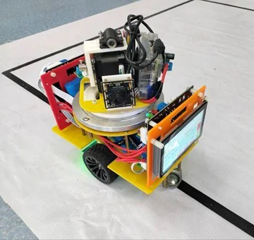

简易自行瞄准装置
让小车沿地面标记路线行驶，同时通过云台调整激光指向，使光斑投射到目标靶面。
- 个人职责
- 校园独立开发
- 验证情况
- 行驶中瞄准测试

项目整体架构图
机电演示构成
标记路线为小车提供循迹参考
地面标记
自动寻迹底盘载着云台沿标记线路行驶
移动载体
双轴云台与光学演示模块用于观察移动过程中的协同表现
底盘与云台的控制关系图
联调整合了循迹底盘和云台演示两部分，路径一关注车辆行驶，路径二关注机电动作。
循迹控制
寻迹输入反映车辆与标记线的位置关系
循迹反馈
底盘控制依据标记反馈组织行驶
行驶动作
小车底盘执行沿线移动
云台演示
演示控制组织云台动作测试
云台动作
双轴云台承载光学演示模块
软件模块设计
- 寻迹输入
- 将地面标记作为底盘运动的观察输入。
- 底盘行驶
- 由小车底盘执行沿标记路线的移动。
- 云台联调
- 将双轴云台装入移动平台，观察行驶与云台动作能否配合。
硬件通信接口设计
| 设备或端点 | 通信接口 | 信号或数据 |
|---|---|---|
| 寻迹输入 → 底盘控制 | 循迹反馈输入 | 标记线反馈 |
| 底盘控制 → 小车底盘 | 运动控制输出 | 底盘行驶动作 |
| 演示控制 → 双轴云台 | 云台动作输出 | 机电演示动作 |
关键功能与技术说明
- 移动平台上的机电联调
- 将底盘循迹与云台演示放在同一次联调中，观察小车沿线行驶时云台的动作表现。